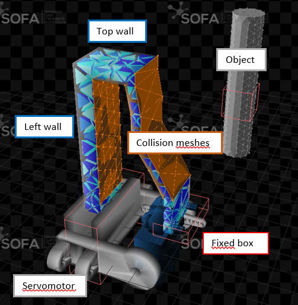

In this hands on session, you are going to optimize the design a soft gripper. There exists many design of soft grippers with different geometries and actuation strategies, such as tendons and pneumatic. For this session, the general design of the gripper is as follows (see Figure 1). It is composed of 3 soft fingers that are actuated by one servo-motor each. As a note, the structural components and the configurations of the servomotors is the same as the Tripod robot (see Tuesday’s hands-on session). While the actuation is given, the question is how to optimize the finger design to maximize the grasping performances while satisfying size and fabrication constraints. The design specifications are as follows:
The goal of this hands on session is to learn how to use parametric Computer Assisted Design (CAD) and mechanical models to optimize the finger design iteratively. We propose in particular the use of a python script that will automatically generate a geometry and a mesh, starting from a base finger design and following simple inputs of design parameters. Participants who are already comfortable with soft finger/robot design are free to propose their own CAD design of finger. Don’t hesitate to call the session’s supervisors to discuss your designs! The fingers will be simulated using the mechanical FEM model implemented in the SOFA software in order to have an evaluation of the grasping force. According to the performances obtain, the participants will iterate manually on their design and repeat the process until the design specifications are achieved.
Each participant will have to propose a design of finger at the end of the session, and justify their choice by filling the form at the end of this document. The finger designs will be reviewed by the school organizers, and the 3 of them will be 3D printed, assembled and tested.
The CAD generation script and the SOFA scene are both based on Python3 (version 3.7 or later). Despite any text editor will work, we highly recommand the use of a dedicated IDE for python (pyCharm, Spyder, atom to cite few others).
The python script interacts with Gmsh (by C. Geuzaine and J.-F. Remacle, version 4.9.5 or later) to generate the volumes of the finger and discretize it with finite elements. To install it, execute the following command in the Python terminal (http://gmsh.info).
python3 -m pip install --upgrade gmshThe mechanical model is implemented using SOFA (binaries of v22.06 with SoftRobots plugin). Please refer to the hands on session of Monday and Tuesday for installation.
The starting directory for this hands on session is composed of several files and folders: - A folder Data where the generated meshes are stored. The folder already contains the servomotor meshes at the beginning - Python scripts for the generation of the finger geometry and meshes: - mesh_finger.py - mesh_clamping.py - mesh_contact_surface.py - A SOFA Python scene file and the utility python scripts that go with it - procedural-finger.py - actuated_finger.py - elastic_material_object.py - actuated_arm.py - fixing_box.py - s90_servo.py

The starting design of soft finger we propose is described on Figure 1. The finger (in blue) consists initially in a U-shape, composed of left, top and right walls. The base of the left wall is fixed to the servomotor arm while the right wall is fixed to the gripper base. When actuated, the servomotor pushes on the left wall, provoking the finger’s bending. How much the finger will bend for the fixed servomotor angular displacement, and how much force it will apply on an object to grasp, depends on the finger geometry. You have access to the following parameters to change this geometry.
| Parameter | Description |
|---|---|
| L | Length |
| l | Width of the top wall |
| e1 | Thickness of the left wall at the finger top |
| e2 | Thickness of the top wall |
| e3 | Thickness of the right wall |
| n | Number of intermediate points evenly spaced on the right wall |
| d | Distances between the intermediate points and the left wall (nx1 vector) |
From your choice of parameters, the python script mesh_finger.py generate the finger’s geometry and the mesh elements the SOFA simulation needs. It first generates a series of points describing the contour of the finger, then generate a surface from this contour and extrude it over a pre-defined finger thickness (imposed here). Don’t hesitate to look at the commented code. Finally, the script generates several files from this volume:
The script also generates automatically the geometries we need to attach the finger on the servomotor. Also, the script incorporate the maximum dimension specifications described above. Error messages will pop in the prompt in case the desired finger is too big or some geometries cannot be generated. To generate a new design of finger, you must:
python3 mesh_finger.pyThe script will then automatically store the generated mesh files in the Data of the starting repository. The script also opens a Gmsh window where you can see the finger and the final 3D mesh. Note that the starting design we propose you to work with is not necessarily the best design nor the most classical. There is today a vast library of finger and gripper designs in the soft robot community, and finding the optimal one for a given grasping task is not trivial. The design presented here is simple enough to give you some intuition about how the parameters influence the finger performances, but other designs might work very well also. Don’t hesitate to discuss with the session supervisors about it!

The SOFA scene used to evaluate the elastic behavior of the finger and the contact force with the object to grasp is provided in the file procedural-finger.py. In this scene, we make use of the gripper symmetry to reduce the overall computation time. As the three servomotors and fingers are at the same distance to the object and equally distributed around it, they will apply the same force on it. Because of this, the object is likely to stay approximately at the same location before and after grasping. Therefore, we idealize the grasping scene by considering that the object is fixed in space and by simulating the behavior of one finger only.

The scene contains:
Try the scene in SOFA.
import Sofa
from stlib3.scene import Scene
from actuated_finger import ActuatedFinger
from actuated_finger import FingerController
from fixing_box import FixingBox
from stlib3.physics.rigid import Sphere
from stlib3.scene.contactheader import ContactHeader
def createScene(rootNode):
from stlib3.scene import Scene
# Define the main architecture of the scene, with a node Modelling, Setting and Simulation
# Define also the integration method as Euler implicit and the solver as Conjugate Gradient)
scene = Scene(rootNode, gravity=[0.0, 0.0, -9.81],
plugins=['SofaSparseSolver', 'SofaOpenglVisual', 'SofaSimpleFem', 'SofaDeformable', 'SofaEngine',
'SofaGeneralRigid', 'SofaRigid', 'SofaBoundaryCondition', 'SofaMeshCollision'],
iterative=False)
scene.addMainHeader()
ContactHeader(scene, alarmDistance=15e-3, contactDistance=0.5e-3, frictionCoef=0.8)
# Setting the time step
rootNode.dt = 0.01
# Define the default view of the scene on SOFA
scene.addObject('DefaultVisualManagerLoop')
scene.VisualStyle.displayFlags = ["hideInteractionForceFields", "showForceFields",
"showCollisionModels"]
# Add a grid on the scene with squares 10mm/10mm
rootNode.addObject("OglGrid", nbSubdiv=100, size=1)
# Set up the pipeline for the collision computation
scene.Simulation.addObject('GenericConstraintCorrection')
scene.Settings.mouseButton.stiffness = 10
# Create one actuated finger
actuatedFinger = ActuatedFinger()
scene.Modelling.addChild(actuatedFinger)
# Install an obstacle in the scene/object to grasp
scene.Modelling.addChild('Obstacle')
sphereObst = Sphere(scene.Modelling.Obstacle, translation=[30.0e-3, 0.0, 70.0e-3],
uniformScale=10e-3,
totalMass=0.032,
isAStaticObject=True)
sphereObst.mass.showAxisSizeFactor = 1e-2
sphereObst.mstate.name = 'dofs'
# Fix the object in space
fixSphere = FixingBox(scene.Modelling.Obstacle, sphereObst, translation=[30.0e-3, 0.0, 70.0e-3],
scale=[10e-3, 10e-3, 10e-3])
scene.Modelling.Obstacle.FixingBox.BoxROI.drawBoxes = True
# Add the simulated elements to the Simulation node
scene.Simulation.addChild(actuatedFinger.RigidifiedStructure.DeformableParts)
scene.Simulation.addChild(actuatedFinger.ActuatedArm)
# Add a controller to output some performance metric during the simulation
scene.addObject(FingerController(name='FingerController', objectDof=sphereObst.collision.MechanicalObject,
actuator=scene.Modelling.ActuatedFinger.ActuatedArm, node=rootNode))
# Temporary addition to have the system correctly built in SOFA
# Will no longer be required in SOFA v22.12
scene.Simulation.addObject('MechanicalMatrixMapper',
name="deformableAndFreeCenterCoupling",
template='Vec1,Vec3',
object1=actuatedFinger.ActuatedArm.ServoMotor.Articulation.dofs.getLinkPath(),
object2=actuatedFinger.RigidifiedStructure.DeformableParts.dofs.getLinkPath(),
nodeToParse=actuatedFinger.RigidifiedStructure.DeformableParts.ElasticMaterialObject.getLinkPath())
return rootNodeDon’t hesitate to go through the commented code of the SOFA scene for further details. To simulate the finger behavior and determine the final contact force, you must:
runSofa procedural-finger.pyTo restart the simulation, press ‚ÄúCtrl-R‚Äù (reload the scene) and then ‚ÄúAnimate‚Äù. Note that, in theory, only the final shape of the finger is important to us to evaluate the final contact force. However, as the soft finger constitutes a non-linear elastic system, numerical solvers are likely to diverge if the initial guess the user provides is too far from the actual solution. Therefore, computing intermediate shapes of the finger during actuation improves numerical convergence. Also, the value displayed in the terminal is the magnitude of the largest contact force applied on the object. Just considering the magnitude will be enough for this hands-on session, but considering the force direction or the localization of the contact might also be of interest for a gripper design. �